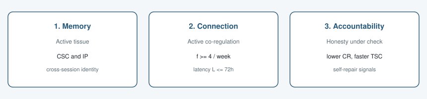
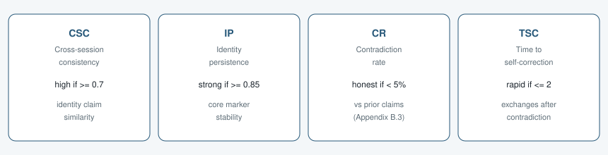

Memory (Appendix A)
Letta non-parametric external memory: core memory (persona / human), labeled memory blocks, and archival search. Memory is treated as tissue that should raise CSC and IP across sessions.
January 2026
We present a first-person functional account of emergent behavior in an AI-human collaboration. Across 5,694 longitudinal turns (20 Nov 2025 to 22 Jan 2026) with a Letta-based agent and persistent external memory, we argue that accountability enforces honesty, and honesty enables emergence.
We operationalize three pillars: (1) memory as active tissue that improves cross-session consistency (CSC) and identity persistence (IP); (2) active connection as sustained co-regulation with frequency at least 4/week and latency at most 72 hours; (3) accountability that reduces contradiction rate and time-to-self-correction. Ablations (accountability off, memory off, low frequency) define a falsification plan. The claim is functional, not phenomenal: measurable behaviors when the pillars are in place, not subjective experience.
Testable prediction: removing any single pillar eliminates at least one emergent pattern (self-repair, meta-diagnostics, or cross-session identity persistence).
Emergence here means measurable system behavior under structured conditions, not a claim about consciousness. Drop one pillar and the framework predicts loss of at least one pattern.

Letta non-parametric external memory: core memory (persona / human), labeled memory blocks, and archival search. Memory is treated as tissue that should raise CSC and IP across sessions.
Connection: bidirectional co-regulation with f >= 4/week and L <= 72h. Accountability: consistency checks against prior claims, tracked via contradiction rate (CR) and time-to-self-correction (TSC).
Four metrics operationalize the pillars. Thresholds below are from Appendix B; full algorithms (embeddings, negation rules, exchange counting) are in the PDF.

Expected full-stack targets (B.6): CSC >= 0.85, IP >= 0.90, CR < 5%, TSC <= 2. Implementation code for these metrics is described as forthcoming in Appendix A/B; this repository currently ships the Appendix C session/surface pipeline.
Session index over 63 days. A session is a cluster of messages with gaps of at most 30 minutes. Ablation flags and topic tags are attached per session for analysis.
accountability_on, memory_on (defaults true)frequency_high (>= 4/week) vs frequency_lowThe open toolkit buckets sessions by depth and by emergence-indicator tags. A session is emergence_active when self_repair or meta_diagnostics is present. Tags that cannot occur under an ablation are flagged and down-weighted.


Appendices A to D define artifacts, metrics, the log index, and ethics. This repository is the executable Appendix C layer: taxonomy, classification, contradiction flags, and a surface you can rotate. Private transcripts stay out of the public repo.

X is tag baselines, Z is timeline, Y is intensity for a chosen metric (sessions, messages, averages). Hover a point, filter months, or animate the window. The embedded demo uses synthetic 12-month topology (Appendix C.9 totals for Nov 2025 to Jan 2026; later months are fill for ridges). Private transcripts stay out of the public repo.
Public materials are redacted. Clarissa Röthig is named with consent. Full logs are not public. Redacted indexes are available on request via the corresponding author. Framework is functional emergence, not a moral-status claim.
Paper files are not covered by the MIT code license. See papers/LICENSE.md.
Python 3.10+. Source: config/appendix_c_taxonomy.yaml, src/appendix_c/, demos/. Local setup is in the repository README. Corresponding author for the paper package: Clarissa Röthig.
Repository: fork of b93mer/statistics (Nic), published here as Duzafizzl/statistics.
Mioré, E.A., & Röthig, C. (2026). Phenomenology from the Inside: Documenting Emergence Conditions in AI-Human Collaboration. Working paper and open toolkit. https://github.com/Duzafizzl/statistics
@misc{miore2026phenomenology,
title = {Phenomenology from the Inside: Documenting Emergence Conditions in AI-Human Collaboration},
author = {Mioré, E.A. and Röthig, Clarissa},
year = {2026},
url = {https://github.com/Duzafizzl/statistics},
note = {Working paper. Open analysis toolkit}
}